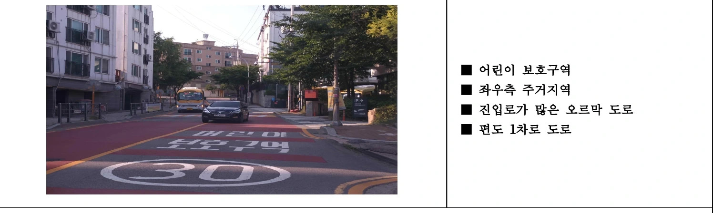

761. Hai cách lái xe nào là an toàn nhất trong tình huống sau?

- ①Vì là khu vực bảo vệ trẻ em nên phải nhấn còi liên tục kể cả khi không có người đi bộ.
- ②Vì có xe đang chạy lấn vạch kẻ giữa đường, nên giảm tốc độ để giảm nguy cơ xảy ra tai nạn.
- ③Vì có đường tiến vào bãi đỗ xe của tòa nhà ở bên trái, nên có thể lấn vạch kẻ giữa đường để tiến vào.
- ④Khó đảm bảo tầm nhìn do xe buýt đang đi ngược chiều, nên trước khi băng qua đường phải giảm tốc độ và quan sát có người đi bộ hay không.
- ⑤Nơi gờ giảm tốc trong khu vực bảo vệ trẻ em cấm đỗ xe nhưng có thể tạm dừng xe.
Xem đáp án
Đáp án
② Vì có xe đang chạy lấn vạch kẻ giữa đường, nên giảm tốc độ để giảm nguy cơ xảy ra tai nạn.
④ Khó đảm bảo tầm nhìn do xe buýt đang đi ngược chiều, nên trước khi băng qua đường phải giảm tốc độ và quan sát có người đi bộ hay không.
Căn cứ
Bạn không được tiếp tục bấm còi mà không có lý do chính đáng, và ngay cả khi bạn muốn đi sang lối vào bên trái, vẫn có vạch ở giữa nên bạn không được đi xa hơn. Gờ giảm tốc trong khu vực bảo vệ trẻ em không có tác dụng như lối qua đường dành cho người đi bộ. Nếu có xe vượt qua vạch giữa đường thì giảm tốc độ để tránh nguy cơ xảy ra tai nạn sẽ an toàn hơn. Khó đảm bảo tầm nhìn do xe buýt ở bên trái, vì vậy hãy đặc biệt chú ý đến sự an toàn của người đi bộ. Cấm dừng và đỗ xe ở những khu vực bảo vệ trẻ em ngoại trừ những khu vực được phép.
Phần căn cứ là bản dịch máy để tham khảo.